audio-technica（オーディオ・テクニカ）
1962年設立の日本のマイクロフォン・ヘッドフォン・音響機器メーカー。現在では光ピックアップやAUTEC（オーテック）ブランドでの食品加工機器なども手がけている。ソニーと並び、日本の代表的なヘットフォンブランド。以前からカートリッジの誌聴検査用にヘッドフォンを自作していたらしいが、1974年から自社ブランドのヘッドフォンの販売を始めた。当初の製品はオープンエア型中心であったが、1980年代半ばより、密閉型の製品が充実するようになった。また木のヘッドフォンのシリーズも持っている。
最初の製品グループはテクニカの他の製品と共通の「AT」で始まる型番であったが、2世代目の製品グループより現在と同じ「ATH」で始まる型番となった。80年代半ばまでは型番による製品グループを展開してきたが、80年代後半より機能別の製品グループ単位で展開するようになった。
audio-technica（オーディオ・テクニカ）の製品を以下のように分類する。（この分類は個人的な意見で、メーカーの分類ではありません）
�T.AT-700シリーズ
最初の製品グループ。AT-714を除けばすべてオープンエア型であった。当時としては比較的高級路線（ローエンド機のAT-701で7,000円）であり、コンデンサー型をトップモデルとする。なおコンデンサー型とAT-714を除いたモデルはコード長が5mであり、アメリカ等の海外展開を主眼としたモデルだったのかもしれない。
AT-701 AT-702 AT-703 AT-704 AT-714
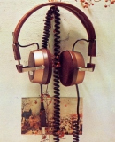
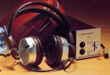
(左 AT-703 右 AT-706)*AT-705及びAT-706について
テクニカのコンデンサー型のうち、AT-705及びAT-706とそれ以降のモデル（ATH-7、8、70、80、9000）はコネクターの形が違う。AT-705及びAT-706はDINの4ピン端子だが、それ以降のモデルはテクニカ独自の端子である。その為両者のアダプターは互換性がない。またATH-7、8、70、80、9000はバックエレクトレットタイプだが、AT-705及びAT-706は膜エレクトレットタイプの可能性がある。
�U.ATH一桁シリーズ
型番をATHに変更後、最初の製品グループ。当初はATH-3、4、5、7、8の同一デザインの路線でスタートし、後にATH-1、2とダイナミック型の最高級機ATH-6Dが追加された。上位２機種はコンデンサー型だが、他社では比較的高級機に用いられていた動電全面駆動型をローエンド機としたのは珍しいケースである。このシリーズには密閉型はない。
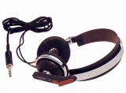 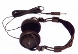 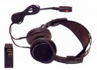
＊ATH-3について豊永尚輝 氏所有機の画像を使用しました。ありがとうございます。
�V.Pointシリーズ
ATH一桁シリーズの時代に平行して始まったポータブルヘッドフォンのシリーズ。ソニーのMDR-3等の影響によるものか？型番が少数となっており、初期の製品、たとえばATH-0.5は「point5」と呼ばれた。後半のモデルから折り畳みに対応する機種がでてくる。最後は型番に小数点第２位まで使われるようになった。
ATH-0.1 ATH-0.3 ATH-0.5 （オプションパーツ） ESKIMO 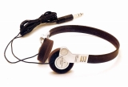 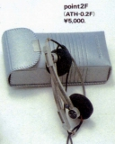 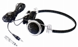 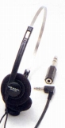
ATH-0.2 ATH0.2F ATH-0.4 ATH-0.6
ATH-0.7 ATH0.8
ATH-0.12 ATH-0.16 ATH-0.21 ATH-0.31 ATH-0.33 ATH-0.35 ATH-0.41 ATH-0.44 ATH-0.44COM
�W.ATH二桁シリーズ
ATHの後にアルファベットがつかない最後のシリーズ。この後の製品にもATHの後にアルファベットがつかない型番のモデルはあるが、ヘッドフォン全体の製品グループではなくなった。前シリーズのコストダウン・マイナーチェンジ版であるコンデンサー型のATH-70、80を除き、小型モデルの製品群である。ダンピングコントロール機構を持つATH-20、30、50の系統と、バックロード構造採用のATH-40i、60iの系統がある。「i」は「インプルーブドモデル」の意味。なおカプセルは小型だが、使用ユニットは大口径（ATH-50及び50i、40i、60iで46�o）であり、モニターシリーズのATH-M7や9と同じサイズで、44�o径のATH-900シリーズより大きい。
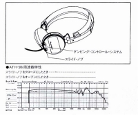
ATH-20 ATH-20i ATH-20D ATH-20E
ATH-30 ATH-30i ATH-30COM
ATH-50 ATH-50i
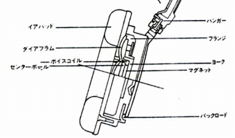
ATH-40i ATH-60i
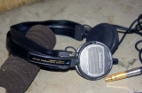
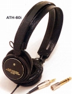
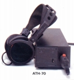
(左 ATH-50i 中央 ATH-60i 右 ATH-70)
�X.モニターシリーズ
小型機のATH二桁シリーズと平行して販売されたATH-Mで始まるモニター用ヘッドフォンのシリーズ。シリーズ初期に1台オープンエア型(ATH-V7)があったが、他はすべての密閉型のシリーズである。1980年代後半〜90年代初頭のテクニカの代表的なシリーズ。ヘッドフォンブランドとしてはオープン型中心だったテクニカを、密閉型の得意なブランドに変貌させたシリーズでもある。当時のオーディオ誌のテストではATH-M9やM9Xなどが取り上げられていた。またCD誌聴コーナーではATM-M7とその後継機をよく見かけた。
ATH-M2X〜9Xは上位機種(M6X以上）にネオジウム磁石を導入した改良機シリーズ。ATH-M44〜77は「IQベースエキサイター」と呼ぶダクトで低域特性を改善したタイプ。
ATH-M3 ATH-M7 ATH-V7 ATH-M9 ATH-M7PRO
ATH-M5 ATH-M5AV ATH-M6 ATH-M7PROa
ATH-M2X ATH-M3X ATH-M4X ATH-M5X ATH-M6X ATH-M7PROX ATH-M9X
ATH-M44 ATH-M55 ATH-M66 ATH-M77
ATH-M40fs ATH-M2Z
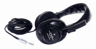
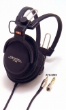
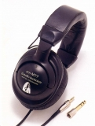
(左 ATH-M7PRO 中央 ATH-M9X 右 ATH-M77)
�Y.ATH-900シリーズ
ATH-900番代のヘッドフォン。当時のヨーロッパのヘッドフォン（ゼンハイザー、AKGなど)を意識したと思われる、高インピーダンス（600Ω）・低能率（92dB/mW）、耳覆い型の大ぶりなデザインのヘッドフォン。3機種あり廉価版のATH-909、密閉型のATH-910、上級機のATH-911がある。ヘッドフォン自体は大柄だが、使用ユニットは44�o径で、同時代のコンパクトなATH-40i、50i、60i（ユニット径46�o）より小さなユニットを使用している。またこのシリーズのヘッドバンド等を流用したテクニカ最後のコンデンサー型ヘッドフォンがATH-9000。
（コンデンサー型） ATH-9000
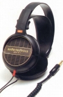
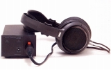
(左 ATH-911 右 ATH-9000)
�Z.インナーイヤータイプシリーズ
80年代半ばの「mini」シリーズ、「S」シリーズなど初期のインナーイヤー型。
ATH-mini1 ATH-mini3 ATH-mini4 ATH-mini5
ATH-S3 ATH-S4 ATH-S5 ATH-S7
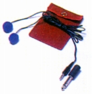 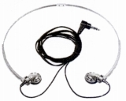 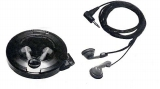
�[.1980年代末以降の機種
ATH二桁シリーズの生産が終了した1980年代後半以降から、ATHの後にアルファベットがつく（例
ATH-A9、ATH-W100）スタイルが定着した。
(1)ATH-A（アートモニター）シリーズ
現行のATH-A2000Xなどにつながるアートモニターシリーズ。
ATH-A3 ATH-A4 ATH-A5 ATH-A7 ATH-A9 ATH-A10 ATH-A10ANV
ATH-A5X ATH-A7X ATH-A9X
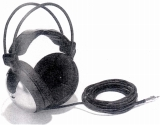
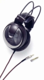
(左 ATH-A10ANV 右 ATH-A9X)(2)ATH-AD（エアダイナミック）シリーズ
ATH-AD2000などにつながるエアーダイナミックシリーズ。ATH-A（アートモニター）シリーズやATH-Wシリーズで密閉型中心となっていたテクニカの大型モデルでは貴重なオープンエア型のシリーズ。
ATH-AD5 ATH-AD7 ATH-AD9 ATH-AD10
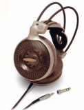
(ATH-AD10)（3)ATH-B（デジタルベーシック）シリーズ
1980年代末に展開した入門機のシリーズ。基本的に密閉型だが最上位機種のATH-B7はオープンエア型。
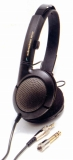
(ATH-B7)(4)ATH-Cシリーズ
現在まで続くインナーイヤー型のシリーズ。
ATH-C1 ATH-C3 ATH-C5 ATH-C7 ATH-C9
ATH-C11 ATH-C22TV ATH-C33 ATH-C44 ATH-C55 ATH-C66 ATH-C77
ATH-C23TV
ATH-C10 ATH-CZ1,3,5 ATH-C32,31 ATH-C52,51
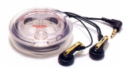
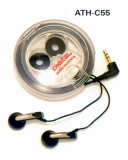
(左 ATH-C9 右 ATH-C55)(5)ATH-E（イアフィット）シリーズ
1990年代末頃から増加した耳かけスタイルのヘッドフォン。その後ATH-EQ2、5などが追加される。
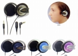
(ATH-EZ5)(6)ATH-Fシリーズ
比較的コンパクトな折りたたみ型ヘッドフォンのシリーズ。透明素材や通電で色が変わる素材を外装に使ったモデルがある。
ATH-F1CX ATH-F2 ATH-F3 ATH-F5CX ATH-F5E
ATH-F11 ATH-F15 ATH-F33 ATH-F55
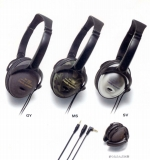
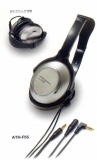
(左 ATH-F5E 右 ATH-F55)(7)ATH-Gシリーズ
40�o振動板を採用した堅牢な設計の低価格密閉型。
ATH-G2 ATH-G2TV ATH-G3 ATH-G4 ATH-G5 ATH-G6
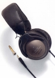
(ATH-G5)(8)PROシリーズ
モニター（ATH-M）シリーズの性格を引き継ぐヘビーデューティー機。
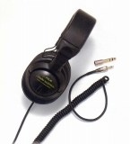
(ATH-PRO6)(9)ATH-Tシリーズ
40�o振動板を採用した低価格密閉型。折り畳み式で上位2機種はショートコード仕様。
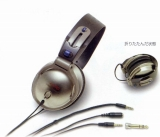
(ATH-T4)(10)ATH-Uシリーズ
ヘッドバンドがなく、ヘアスタイルに影響を与えないフリーサイズ対応の上下逆転の構成を持つヘッドフォン。耐入力にも余裕があり、某店の誌聴機にも採用された。ATH-U9PROは某店の誌聴機ATH-U9Tの母体となっている。ATH-U66、88は折りたたみタイプ。
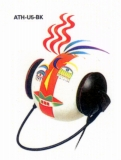
（当時の広告のカット）ATH-U3 ATH-U5 ATH-U7 ATH-U8M ATH-U9PRO
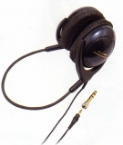
(ATH-U9PRO)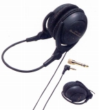
(ATH-U66)（番外：楽器モニター用） ATH-U3MM
(11)ATH-Wシリーズ
木のハウジングを持つ密閉型のシリーズ。数量限定モデルを多発する。
ATH-W10VTG ATH-W10LTD ATH-W11JPN ATH-W100 ATH-W11R
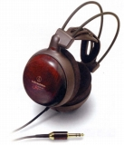
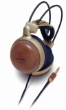
(左 ATH-W11JPN 右 ATH-W11R)(12)その他
ローエンド商品や特殊なモデル。AT-HSP5はフルオープン型のヘッドスピーカー。
ATH-LX3 ATH-LX5 ATH-P1 ATH-P3 ATH-R5 AT-HSP5 ATH-SX1
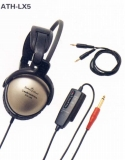
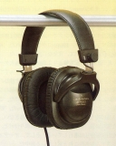
(左 ATH-LX5 右 ATH-S0)ヘッドフォンアンプ
現在ではAT-HA5000など鑑賞用のヘッドフォンアンプも存在するが、1990年代にはまだ純粋な観賞用ヘッドフォンアンプはテクニカにはなかった。AT-HAは4系統の出力を持つ多目的アンプで3台まで増設可能、バイリンガル授業や店頭デモ、さらにバンドのパートごとのモニターなどを想定していた。
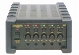
(AT-HA50)
グラフィック・イコライザー
1980年代初頭頃はかなりグラフィック・イコライザーが流行していた。テクニカは短い期間だがステレオミニプラグで接続し、ステレオジャックを備えた、乾電池式のイコライザーAT720を販売していた。
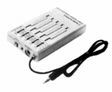
(AT720)
マルチメディア対応製品(ATC型番）
1995年にパソコンでの使用を目的としたマルチメディア対応の新機軸としてATC-H3が発売された。その後1998年にATC-H5が発売される。その他、この型番ではヘットセットでATC-H1、4、7COMがある。
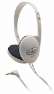
(ATC-H3)TH型番の製品
1990年代からラインナップの穴を埋めるようなかたちで販売されているヘッドフォン。なぜ「ATH」の型番ではないかは不明。Stereo
Sound YEAR BOOK等には記載されていない。カタログでもスペック表には載っていないケースもある。
TH-11AV TH-15AV TH-22AV TH-23AV TH-60 TH-77 TH-80AV TH-100AV TH-350AV
TH-03LM TH-65 TH-V1
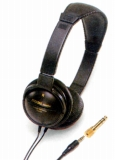
(TH-65)CA型番の製品
TH型番に相当するインナーイヤー型。1993年頃、ATH-C77などと平行して販売されていたのが確認できた。ここにあげた2機種以外ではマイクロプラグ仕様のモノラルタイプCA-25及びCA-25Mがある。
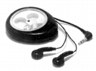
(CA-21)